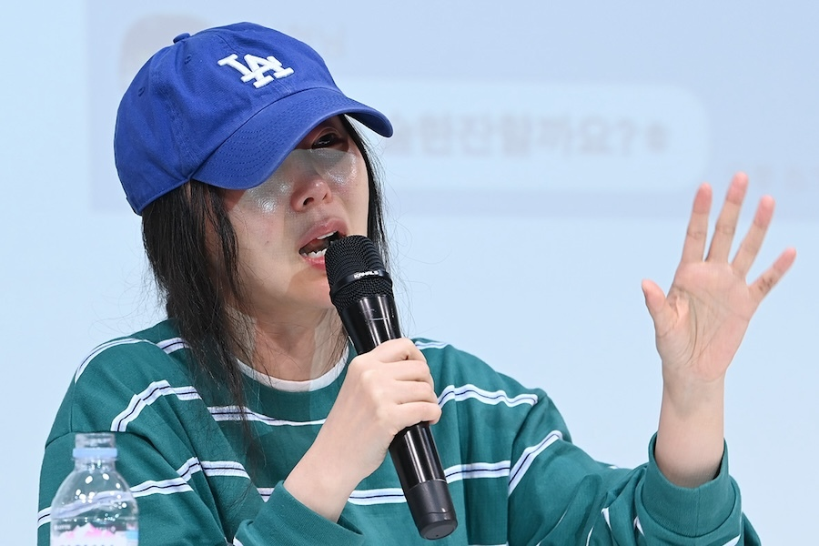

Min Heejin Vindicated? BTS Concert Turnout Failure Reignites HYBE Criticism

As HYBE's stock price tumbles and questions mount about the disappointing BTS comeback concert turnout, online communities are revisiting the explosive warnings issued by former ADOR CEO Min Heejin during her 2024 conflict with the entertainment conglomerate. While the situations are different, critics argue that patterns of mismanagement she identified are now visible in HYBE's handling of their flagship act's return.
The connection being drawn is not direct—Min Heejin's battle with HYBE centered on NewJeans and ADOR's autonomy, not BTS operations. But the broader critique she leveled at HYBE's corporate culture, decision-making processes, and relationship with artists is finding new resonance as observers dissect what went wrong at Gwanghwamun Square.
"Enough time has passed. Min Heejin was RIGHT," reads one widely-shared post on Korean forum Theqoo, which has accumulated thousands of comments since the concert's underwhelming attendance became public. The sentiment, while not universal, reflects a significant current of online opinion reassessing the 2024 controversy through the lens of current events.
Revisiting The Min Heejin Conflict
In 2024, Min Heejin—the creative mind behind NewJeans' meteoric rise—engaged in a very public battle with HYBE after being accused of attempting to seize control of ADOR, the subsidiary she led. Min fired back with explosive allegations of her own, portraying HYBE as a company that had lost its creative soul in pursuit of corporate expansion.
During her infamous press conference, Min painted a picture of HYBE leadership as disconnected from the artistic realities of managing talent, more focused on stock prices than artist welfare, and willing to sacrifice creative integrity for commercial convenience. Her comments about the "destruction of the K-pop ecosystem" resonated with those who felt the industry had become too corporate.
At the time, HYBE dismissed her claims as the desperate attacks of someone facing removal for cause. The legal battle that followed went poorly for Min and NewJeans—the Seoul Central District Court sided with ADOR on key injunctions in March 2025, effectively ending the members' attempt to escape their contracts.
But the court of public opinion operates differently than courts of law. And with HYBE now facing its own credibility crisis over the BTS concert, some are reconsidering whether Min's broader critiques had merit.
The Gwanghwamun "Fiasco"
The BTS comeback concert was supposed to be a triumphant moment—the world's biggest boy band reuniting after nearly four years of military service-related hiatus, performing for free in the heart of Seoul, broadcast globally on Netflix. HYBE and government officials projected 260,000 attendees.
Instead, approximately 104,000 showed up according to HYBE's own numbers—and crowd-tracking data from Seoul's government showed only around 60,000 present midway through the show. The discrepancy between projections and reality triggered a 15% stock drop, negative media coverage about wasted public resources, and a wave of criticism about who was responsible for the inflated expectations.
Critics have pointed to several issues: the choice of a free concert format that may have reduced urgency, the availability of Netflix streaming as an alternative to in-person attendance, the timing coinciding with other major events, and perhaps most damagingly, questions about whether HYBE genuinely believed 260,000 would attend or simply promoted that number for hype purposes.
This last question cuts to the heart of the Min Heejin critique: was HYBE prioritizing spectacle and stock performance over realistic planning and artist welfare?
Connecting The Dots
Those drawing connections between Min's warnings and the current situation point to several parallels. First, the emphasis on scale over substance—Min accused HYBE of pursuing ever-bigger numbers without regard for sustainability or quality. A projected 260,000-person concert that draws less than half that number fits this pattern.
Second, the relationship with public institutions. Min alleged that HYBE had become too cozy with government entities, blurring the line between private enterprise and public interest. The massive police deployment for the Gwanghwamun concert—10,000 officers for a private company's promotional event—and the subsequent political backlash echo these concerns.
Third, the handling of artist welfare. RM performing on crutches just days after a significant ankle injury, then flying to New York for promotional activities, raises questions about whether HYBE prioritizes schedules over health. Min frequently claimed that HYBE's corporate culture deprioritized artist wellbeing.
To be clear: these parallels are interpretive, not causal. Min Heejin has made no public comment about the BTS concert situation, and her 2024 conflict involved different artists under different circumstances. But in the world of K-pop commentary, narratives matter as much as facts—and the narrative that "Min was right" is gaining traction.
The Other Side
Not everyone is convinced by this reassessment. HYBE supporters and many ARMY members push back strongly against attempts to link unrelated situations or to rehabilitate Min Heejin's reputation.
"Min Heejin tried to steal a company and manipulate teenage girls into leaving their contracts," wrote one commenter. "Her being 'right' about HYBE's corporate culture doesn't change what she did. These are separate issues."
Others note that the BTS concert, despite falling short of projections, was still a massive success by most metrics. The album sold over 4 million copies in three days, the Netflix broadcast topped charts in 77 countries, and the 100,000+ who did attend experienced an emotional reunion with their favorite group.
"The stock dip is temporary. BTS is still BTS," argued one investment-focused commenter. "People are desperate to find fault with HYBE and will twist anything to fit their narrative."
The ongoing investigation into HYBE chairman Bang Si-hyuk on Capital Markets Act charges has also muddied the waters, with some critics conflating different controversies while defenders accuse opponents of piling on.
The Bigger Picture
Beyond the specific HYBE debate, the renewed discussion reflects broader anxieties about the K-pop industry's direction. The genre has grown exponentially in the past decade, transforming from a niche export into a global cultural force worth billions of dollars.
But with that growth has come corporatization, scandals, and questions about sustainability. The military service disruption to male groups like BTS, the brutal training systems, the parasocial relationship dynamics, the political controversies—all have contributed to a sense that K-pop's rapid expansion may have outpaced its ability to handle the responsibilities that come with such influence.
Min Heejin, whatever her motivations and methods, articulated some of these concerns in stark terms. That her warnings are being revisited now suggests they touched on real fears, even if her specific case was ultimately unsuccessful.
Whether this moment represents a genuine turning point for HYBE criticism or simply another internet controversy that will fade remains to be seen. But for now, the question "Was Min Heejin right?" is being asked more loudly than at any point since her dramatic press conference nearly two years ago.
HYBE has not responded to requests for comment on this article.